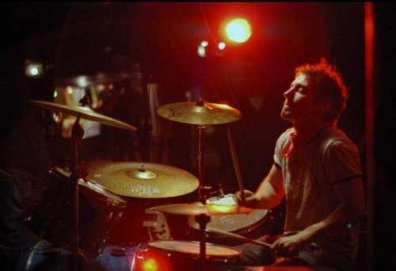

A Question of Sound #3: Social Networking Redeems Itself
A lot has been written about the impact of social networking sites on emerging artists. In fact, the subject quickly became something of a cliché for bloggers and professional journalists, each clambering to tell their tale of how band x notched up y friends and translated this virtual hype into z sales. I recall a strange phase 12 to 18 months ago when publicists were actually quoting friend numbers. This, mercifully, has subsided and the whole thing seems to have become, well, kind of expected. So your band has 1,291 MySpace friends and a thriving Facebook fan page? Join the club.
In August, though, I heard through a friend of a band that had landed a festival appearance near Düsseldorf courtesy of a chance MySpace encounter. I started thinking the unthinkable: maybe social networking isn't a complete waste of time. Maybe that latest friend request could lead to a creative meeting of minds. Or maybe not. I'll leave you to chew on that while I recount the story of Circus Animals' Desertion's German début.
In order to explain how the four members of Circus Animals' Desertion, a dream-pop outfit from Greater Manchester, found themselves in north western Germany, it is necessary to introduce another band. Formed in the mid-eighties in Nordrhein-Westfalen, Germany, RX Only has been playing locally, releasing singles on its own Subdued Sounds label, and organising summer RX Only live parties for a number of years.
This year, however, the band decided to do things a little differently. Multi-instrumentalist Tom Christen explains:
"As we all now are 40 plus, my mates all seem to have lost their motivation and creativity. We were regularly meeting as a band, but mostly we played silly computer games, so I had the idea of organizing a 'RX Only Party' without RX Only, just to see, if my folks would get 'hot' again."
When it came to organising the show, which would eventually feature three headline acts on an outdoor stage, MySpace played a key role. Leipzig's Lipstix, all all-girl power-pop quartet, was recommended by a friend, although the arrangements were subsequently made through the social networking site. RX Only stumbled upon Düsseldorf-based Derby during a MySpace search for local bands, and it was in a similar fashion that Tom Christen discovered Circus Animals' Desertion.
"When I started looking for "friends" on MySpace I concentrated on Manchester, especially on the Chameleons, as our band's main common influence is the Chameleons. Circus Animals' Desertion were on my friend-list for a while and one fine day I saw the ad for a Club Chameleon show at The Star and the Garter, a gig that had to be cancelled ironically, and I wrote to Peter (the band's bassist) about my weird idea... 'Dreams never end' I called the first message."
For the Circus Animals themselves, it was something of a surprise. "The furthest we'd played from Manchester was Ashton-under-Lyne," laughs Peter. "But as soon as I told Ste (vocalist/guitarist), Chris (guitarist) and Jon (drums) about it, we were all very excited by the idea."

Using MySpace as a communication platform, the details were finalised, the flights booked, and one day in late August, Circus Animals' Desertion boarded a low-cost flight for Düsseldorf. As EU citizens, there were no logistical/legal problems with regard to the show, and RX Only sorted out the accommodation, airport transfers and pre- and post-gig entertainment. What could go wrong?
Aside from the weather - relentless rain, which probably followed the Salford-based band over the channel - nothing, it seems. Circus Animals' Desertion played one of their strongest ever sets to a crowd of interested German music fans who, judging by the audible cheers on the soundboard bootleg, had a great time.
"It was unusual to play to a such an enthusiastic crowd," admits Peter. "In England, people tend to be more reserved to new bands, as if approval is needed to show interest. In Düsseldorf, people were shouting for more until after 75 minutes, we had no more songs to play. And this was after even the worst run through of Boy's Don't Cry you'll ever hear."

The band also sold a healthy number of copies of its début album after the show, which seems to confirm the success story. And just as Tom Christen had hoped, the positive experience also seems to have energised the career of RX Only. The band celebrates its 25th anniversary in 2009 and plans to release its own début album, a decision which Tom admits "was very much influenced by the CAD record, which impressed us."
Plans are already being made for an RX Only/Circus Animals' Desertion double header in Manchester in April 2009 - a second leg, if you like. Whether this happens or not, and something tells me it will, RX Only and Circus Animals' Desertion have collectively restored my faith in the powers of social networking to do good.
"We've shied away from using MySpace as many others do, to a large degree," admits Peter. "We don't go around trying to add 20 people a day as 'friends'. What's the point? Are they really going to be interested in our music? But in this instance, it's been a really useful tool in connecting with like-minded people to do something productive and worthwhile."
If more bands can find a way to use these sites creatively, in a personal and friendly manner, then the world will certainly be a better and far more interesting place. A parting message to all the artists reading this: please, please bear this in mind the next time you even think of artificially inflating your friend numbers. It is after all, the quality of your friendships, not the quantity, that makes the difference in the end.
Those all-important MySpace URLs:
* http://www.myspace.com/circusanimalsdesertion
* http://www.myspace.com/subduedsounds